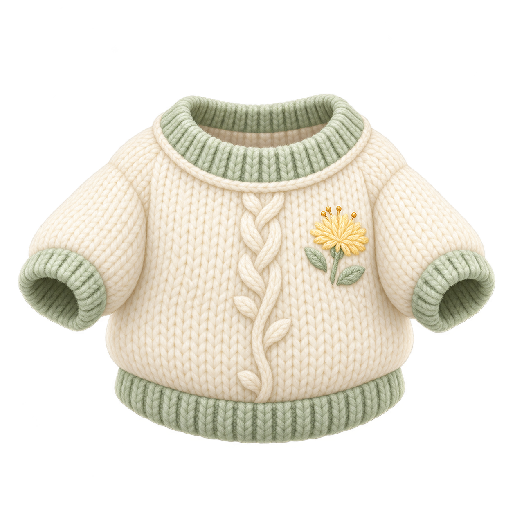

保存済みのプルオーバーをもとに、首・二つの袖口・裾が内側へつながる、服だけの形を作りました。
元の原画と服の形を準備しています…
PNGをダウンロード
左は保存済みの同じ原画です。上の立体は、原画の前側を参考にした形の見本です。背面・内側・厚み・寸法と立体の編み目は今回設計したものです。元の絵を全ての面に貼ったものではありません。キャラへの着用、体に合う寸法、伸び方や動作、入手・保存は未確認です。
服側の目印は実際の表面の頂点と向きに結び付けています。身体の首や手首の装着点ではありません。内側の表示は一か所からの観測で、全ての内側が見通せる保証ではありません。
形と検査範囲